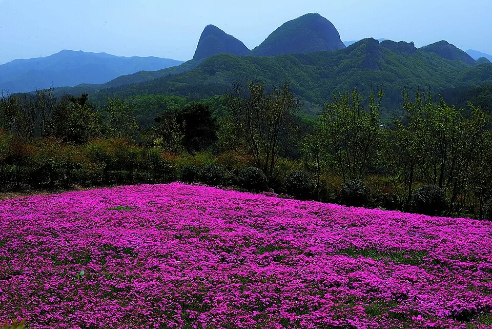
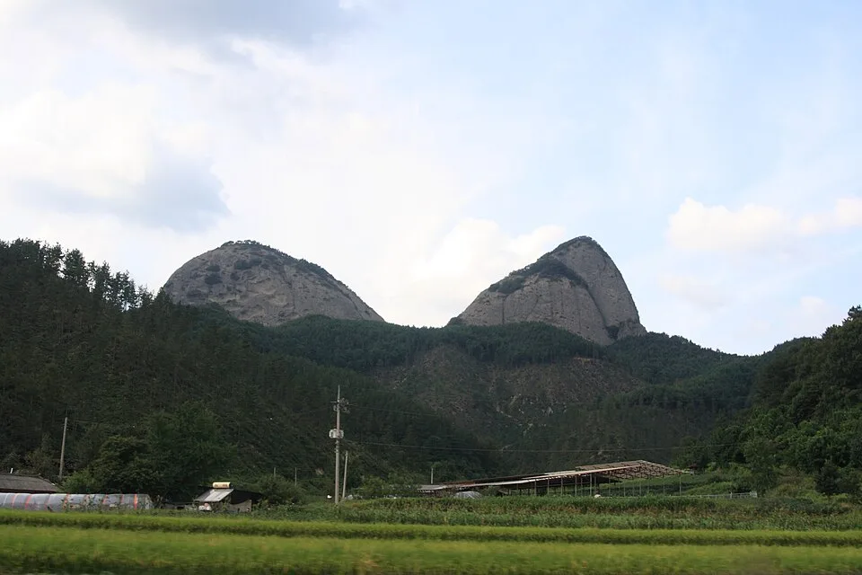
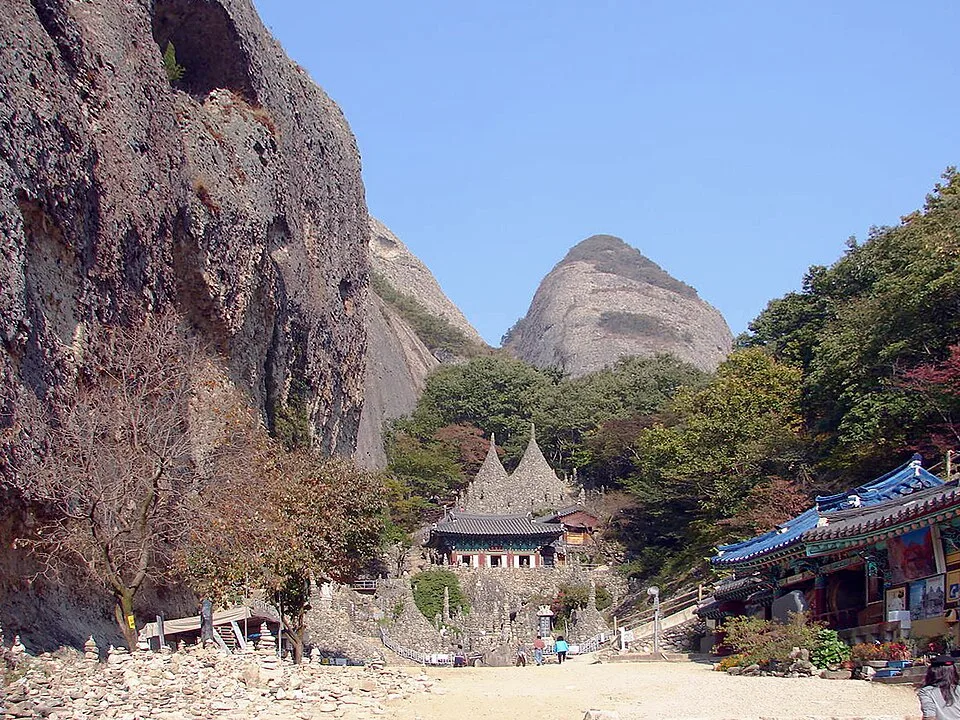
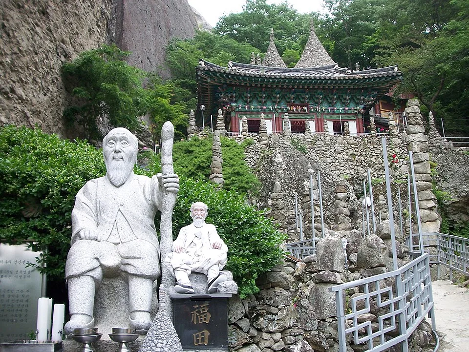
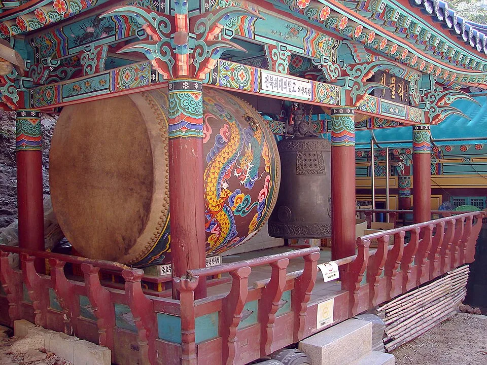
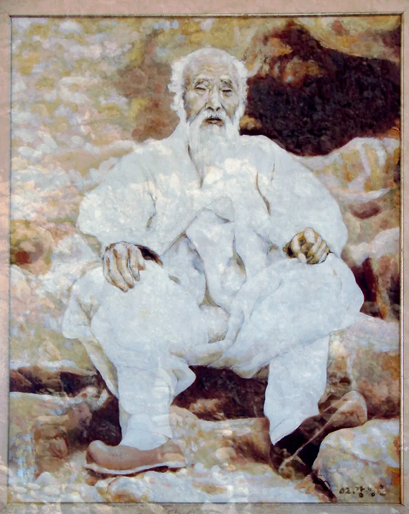
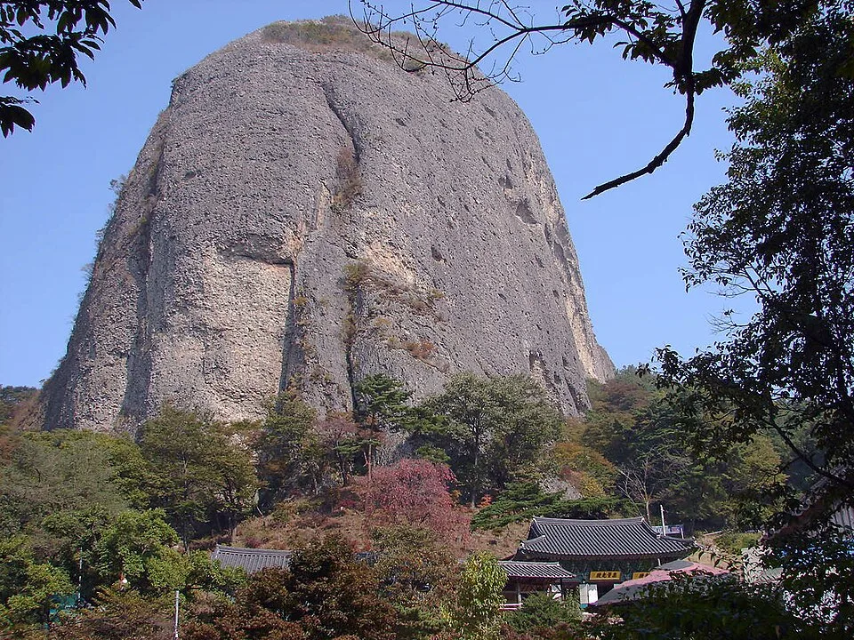
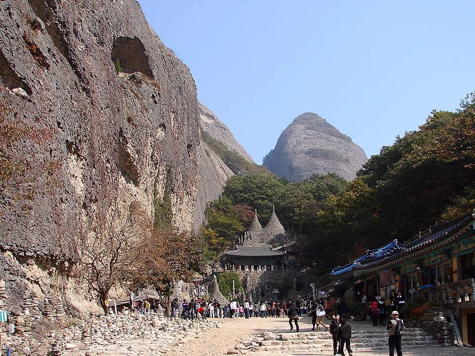
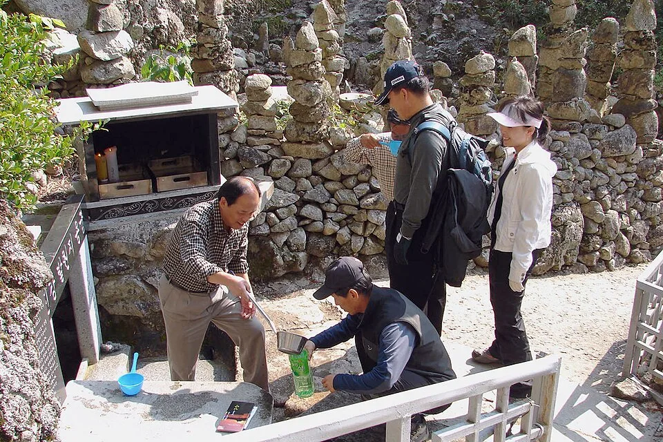

▲ 마이산 암마이봉(왼쪽)과 수마이봉(오른쪽). 계절에 따라 돛대봉·용각봉·마이봉·문필봉으로 이름이 바뀐다 ⓒ Wikimedia Commons
봄에는 쌍돛배 같다 해서 돛대봉, 여름엔 용의 뿔 같다 해서 용각봉, 겨울엔 먹물 찍은 붓끝 같다 해서 문필봉 — 그리고 가을, 단풍이 들면 비로소 말의 귀를 닮았다 해서 마이봉(馬耳峰)이라 불린다. 전북 진안 한복판에 우뚝 솟은 두 개의 거대한 바위산, 마이산(馬耳山) 이야기다. 국가지정문화재 명승 제12호. 그리고 그 두 봉우리 사이 좁은 계곡에는 한 사람이 평생을 바쳐 쌓은 80여 개의 돌탑이 100년 넘게 무너지지 않고 서 있다. 탑사(塔寺)다.
진안에는 이미 홍삼축제와 용담호 드라이브 코스가 있지만, 마이산과 탑사 자체를 제대로 들여다본 적은 없었다. 두 봉우리는 왜 계절마다 이름이 바뀌는지, 이갑룡 처사는 어떻게 시멘트 한 톨 없이 돌탑을 쌓았는지, 겨울이면 거꾸로 자란다는 얼음은 대체 무슨 원리인지 — 마이산과 탑사에 얽힌 사실관계를 정리했다.
1. 말의 귀를 닮은 두 봉우리 — 계절마다 이름이 바뀌는 산
마이산은 신라시대엔 서다산(西多山), 고려시대엔 용출산(龍出山)으로 불렸다. 지금의 이름이 붙은 건 조선시대부터다. 태종이 남쪽을 순행하다 이 산을 보고 "말의 귀를 닮았다"고 한 데서 마이산(馬耳山)이라는 이름이 굳어졌다는 이야기가 전한다.

▲ 멀리서 본 마이산 두 봉우리. 계절과 각도에 따라 완전히 다른 인상을 준다 ⓒ Wikimedia Commons
재미있는 건 이 산이 계절마다 다른 이름으로도 불렸다는 점이다. 안개 낀 봄날 두 봉우리만 삐죽 드러나면 쌍돛배 같다 해서 돛대봉, 수목이 우거지는 여름엔 용의 뿔처럼 보인다고 용각봉, 단풍이 물드는 가을엔 말의 귀 모양이 뚜렷해져 지금의 마이봉, 눈이 잘 쌓이지 않는 암봉이라 겨울엔 먹물을 찍은 붓끝 같다고 문필봉이라 했다. 하나의 산에 사계절마다 다른 이름이 붙은 셈이다.
두 봉우리는 크기와 생김새도 다르다. 서쪽의 암마이봉(687.4m)은 둥글고 뭉툭한 돔형이라 일반인 등반이 원천적으로 제한되고, 동쪽의 수마이봉(681.1m)은 뾰족한 첨봉으로 정상까지 등산로가 열려 있다. 두 봉우리 모두 약 1억 년 전 호숫가에 쌓인 자갈과 모래가 굳어진 역암(礫岩)으로, 오랜 세월 풍화되며 표면에 벌집처럼 구멍이 파인 '타포니(tafoni)' 지형이 발달해 있다. 이 독특한 지질학적 가치를 인정받아 2003년 국가지정문화재 명승 제12호로 지정됐고, 1979년에는 도립공원으로도 지정됐다.
2. 이갑룡 처사, 손끝으로 80여 개의 돌탑을 쌓다
두 봉우리 사이 좁은 계곡, 해발 500m 남짓한 곳에 자리한 절이 탑사(塔寺)다. 정식 사찰명이 따로 없어 '돌탑이 있는 절'이라는 뜻으로 탑사라 불려왔다. 이곳을 마이산의 상징으로 만든 인물이 이갑룡(李甲龍, 1860~1957) 처사다.

▲ 멀리서 본 탑사 전경. 두 봉우리 사이 좁은 계곡에 돌탑군과 전각이 자리 잡고 있다 ⓒ 한국관광공사

▲ 탑사 돌탑군. 크고 작은 돌탑 80여 개가 좁은 계곡을 가득 채우고 있다 ⓒ Wikimedia Commons
기록에 따르면 이갑룡은 전북 임실 출신으로 조선 효령대군의 16대손이다. 16세에 부모를 여의고 3년간 시묘살이를 한 뒤 인생의 허무함을 느껴 19세에 속세를 등졌고, 25세이던 1885년 마이산에 들어왔다. 이후 약 15년간 기도와 수행을 이어가다 1900년 무렵 신의 계시를 받았다며 '억조창생을 구제하고 만민의 죄를 속죄한다'는 뜻으로 돌탑을 쌓기 시작했다고 전해진다. 축조에 걸린 기간은 자료마다 10년에서 30년까지 다르게 전해지는데, 98세로 생을 마칠 때까지 천지탑, 오방탑, 월광탑, 일광탑 등 크고 작은 돌탑 80여 개를 완성했다는 점은 공통적으로 확인된다.

▲ 탑사에 세워진 이갑룡 처사 상. 그가 평생을 바쳐 돌탑을 쌓은 인물이다 ⓒ Wikimedia Commons
더 놀라운 건 축조 방식이다. 이 탑들은 접착제나 시멘트 등 인공 부재료를 전혀 쓰지 않고, 돌과 돌 사이의 무게중심과 음양오행의 이치만으로 쌓아 올렸다고 전해진다. 상단부로 갈수록 좁아지는 구조인데도 태풍과 폭우에 100년 넘게 크게 무너지지 않아 지금도 지질학자와 건축 전문가들 사이에서 회자되는 미스터리다. 일설에는 탑이 완성된 뒤 이갑룡이 독립운동가들에게 자금을 지원했다는 이야기도 전해, 단순한 종교 유적을 넘어선 의미로 읽히기도 한다.

▲ 탑사 경내 종각. 돌탑뿐 아니라 사찰 건축물도 함께 둘러볼 수 있다 ⓒ Wikimedia Commons

▲ 탑사에 남아 있는 이갑룡 처사의 초상. 평생을 돌탑 축조에 바친 인물이다 ⓒ Wikimedia Commons
3. 여름엔 냉수, 겨울엔 거꾸로 자라는 얼음 — 은수사의 역고드름
탑사 바로 위, 두 봉우리가 갈라지는 지점에는 조선 태조 이성계가 기도를 올렸다는 전설이 내려오는 은수사(銀水寺)가 있다. 이 절 마당에서 매년 겨울 관찰되는 현상이 바로 '역고드름'이다.

▲ 은수사에서 올려다본 마이산 봉우리. 이곳 마당에서 겨울철 역고드름이 관찰된다 ⓒ Wikimedia Commons
보통 고드름은 위에서 물이 떨어지며 아래로 자라지만, 은수사의 역고드름은 정반대로 땅에 놓인 정화수 그릇에서 얼음 기둥이 위쪽으로 솟아오른다. 기온이 영하 5~6도로 떨어지는 날, 그릇 표면부터 물이 얼기 시작해 가장자리가 먼저 얼음으로 덮이고 중앙에는 아직 얼지 않은 작은 수면이 남는다. 이 수면에서 증발한 수증기가 차가운 공기와 만나 얼음 가장자리에 계속 달라붙어 얼면서, 마치 촛농이 쌓이듯 얼음 기둥이 조금씩 위로 자라 올라가는 원리다. 보통 10cm 안팎이지만 길게는 30cm를 넘긴 사례도 기록돼 있으며, 은수사 본당에서 동쪽으로 약 25m 떨어진 취수단 부근에서 가장 자주 관찰된다. 비슷한 현상이 경기 연천의 폐터널이나 강원 삼척 환선굴에서도 관찰되지만, 그곳들은 동굴이나 터널 천장에서 떨어진 물방울이 얼어붙은 것이라 생성 원리 자체가 은수사의 역고드름과는 다르다.
▲ 은수사 법당 내부. 조선 태조가 기도를 올렸다는 전설이 전하는 곳이다 ⓒ Wikimedia Commons
4. 등산코스 한눈에 정리 — 어디서 시작해도 탑사는 지난다
마이산 도립공원은 남부와 북부, 두 개의 주차장에서 각각 진입할 수 있고, 어느 쪽에서 출발하든 탑사와 은수사를 반드시 지나게 코스가 짜여 있다. 초행이라면 아래 표를 참고해 체력과 시간에 맞는 코스를 고르면 된다.

▲ 탑사로 향하는 산길. 남부주차장 기준 왕복 2시간 안팎이면 충분하다 ⓒ Wikimedia Commons
| 코스 | 구간 | 거리 | 소요시간 |
|---|---|---|---|
| 남부 왕복(짧은 코스) | 남부주차장 → 금당사 → 탑영제 → 탑사 → 은수사 → 천황문(화엄굴) → 남부주차장 | 약 2.0km | 1~1시간 30분 |
| 남북 종주 | 남부주차장 → 금당사 → 탑영제 → 탑사 → 은수사 → 천황문(화엄굴) → 북부주차장 | 약 2.7km | 1시간 30분~2시간 |
| 북부 왕복 | 북부주차장 → 천황문 → 은수사 → 탑사 → 천황문 → 북부주차장 | 약 2.4km | 1시간 30분~2시간 |
| 표준(정상) 코스 | 남부주차장 → 고금당 → 비룡대 → 탕건봉 → 봉두봉 → 탑사 → 은수사 → 암마이봉 → 천황문 → 북부주차장 | 약 5km 이상 | 3시간 이상 |
길이 험하지 않고 대부분 데크와 계단으로 정비돼 있어 가족 단위로도 무리 없이 걸을 수 있다. 다만 암마이봉 정상 구간(천황문~암마이봉 0.6km, 봉두봉~암마이봉 0.9km)은 매년 11월 중순부터 이듬해 3월 중순까지 결빙에 따른 안전사고 예방을 위해 입산이 통제된다. 개방 기간이라도 우천이나 안개 등 기상 상황에 따라 일시 통제될 수 있어, 방문 전 진안군청 공지를 확인하는 편이 안전하다.
5. 입장료·운영시간·주차·교통 완전정리
2026년 기준 마이산도립공원 탑사 구간 입장료와 운영 정보는 다음과 같다.
| 구분 | 내용 |
|---|---|
| 입장료 | 성인 3,000원 · 중고생 2,000원 · 초등학생 1,000원 (만 70세 이상, 국가유공자, 장애인 무료) |
| 운영시간 | 3~11월 08:00~18:30 / 12~2월 08:00~18:00, 연중무휴 |
| 주차 | 남부주차장(전북 진안군 마령면 동촌리 70-21 일원, 646면) · 북부주차장 모두 무료 |
| 문의 | 마이산도립공원사무소 063-433-0012 (관리사무소 063-430-8094~5) |

▲ 마이산 남부주차장 일대 항공뷰. 646면 규모로 무료 운영되며 봉우리와 가장 가깝다 ⓒ 한국관광공사
마이산도립공원과 탑사에 대한 더 자세한 정보는 대한민국 구석구석에서 확인할 수 있다. 대한민국 구석구석 마이산 탑사 페이지 바로가기
자가용으로는 호남고속도로 익산나들목이나 새만금포항고속도로 진안나들목에서 각각 30~40분 거리이며, 내비게이션에 '마이산남부주차장' 또는 '마이산북부주차장'을 입력하면 된다. 대중교통은 전주·진안 시외버스터미널에서 마이산행 버스를 이용할 수 있으나 배차 간격이 길어, 자가용이나 렌터카 이용이 훨씬 수월하다.
6. 언제 가야 가장 예쁠까 — 계절별 방문 팁
마이산은 계절마다 이름이 바뀔 만큼 사계절 표정이 확연히 다른 산이다. 봄에는 남부주차장 인근 탑영제 벚꽃길이, 가을에는 단풍이 든 봉우리 자체가 볼거리가 된다. 겨울에는 은수사 역고드름이라는 희귀한 현상을 볼 수 있지만, 이 시기엔 암마이봉 등반이 통제된다는 점을 기억해두는 게 좋다.

▲ 탑사를 찾은 방문객들. 돌탑 앞에서 소원을 빌며 정화수를 올리는 모습을 흔히 볼 수 있다 ⓒ Wikimedia Commons
| 계절 | 산의 별칭 | 주요 볼거리 |
|---|---|---|
| 봄 | 돛대봉 | 탑영제 벚꽃길, 안개 낀 봉우리 |
| 여름 | 용각봉 | 짙은 녹음, 은수사 냉수 |
| 가을 | 마이봉 | 단풍 든 봉우리, 가장 붐비는 성수기 |
| 겨울 | 문필봉 | 은수사 역고드름, 암마이봉 등반 통제 |
주말과 가을 성수기에는 남부주차장이 오전 일찍 만차가 되는 경우가 많아, 가능하면 오전 9시 이전 도착을 권한다. 인근에는 진안홍삼축제(9월)와 용담호 드라이브 코스가 있어, 반나절씩 나눠 묶어 다니면 1박 2일 일정으로도 충분히 채울 수 있다.